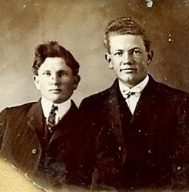

From the Alpha B. Barton Family Book
My brother, George, had obtained his certificate from the Agricultural College in Logan, Utah and while there a professor had said there were opportunities so plentiful in San Juan County that its future guaranteed wealth; just like five dollar bills growing on shadescales. [a type of desert flowering plant]
My brother, Arthur, came from Logan where he had been attending school and we made preparations for our journey to San Juan. My father had sold his farm in Rasmussen Hollow and obtained a good share of our needs for the trek to San Juan County. He purchased a white-top buggy and a span of horses. Arthur and his wife, Vilate, took two wagons (four horses) loaded with hay and grain to supply our teams. I drove a wagon loaded with furniture and led a cow behind the wagon which provided milk for the boys and the rest of us. We took a cream jar along and churned the cream with a paddle and ate the butter on the flap-jacks we cooked in a bake skillet over the fire.
We camped the first night at Huntington Creek down in the foothills, then went by way of Buckhorn Flats, down Buckhorn Canyon into sixteen miles of desert; on to Green River where we crossed on a ferry boat, landing in Grand County. On the fourth day we traveled over a long desert to Upper Court and the fifth day to the Colorado River where we ferried across the river. The boat would have carried us in two loads but a three-year-old mare jumped off her boat in the middle of the river and swam back to the other side. When we drove off the boat, I returned and picked up the mare, thus making three trips for the boat.
It was getting late so we camped near Moab. On the eighth day we reached Cane Springs [Kane Springs on the map above] and found a mail station, a beautiful spring, and quite a large fruit orchard. Benjamin Perkins of Monticello was camped there en-route to Moab, carrying mail. [Bodell feels this is probably the first time the Barton’s and Ben Perkins met.] It was a lovely campground we we stayed the night. Next morning we began the ninth day of our journey. We met John Dalton near “Looking Glass Rock”, traveling toward Moab over hub-deep gutted roads and sand hills. We asked him how far to Monticello and he told us two more long days!
We pursued though it was hot and dry and the stock were tiring. When we reached Hatch Wash it was after dark and there was no water. But John Dalton had told us to go up the draw a little way and we would find some tanks where we could water our stock. We carried our own drinking water in a barrel on the side of the wagon.
The moon was shining and as our stock drank from the tanks, too thirsty to wait to get back to camp, I jumped out onto a rock to get me a drink. I drank freely and long then took our horses and went back to camp. Next morning we again took the stock back to the tanks to drink before starting out again. When we got to the tanks I saw where I had knelt to get my drink the night before. Lo and behold, it wasn’t a rock at all, but a dead cow! Well, the water I drank didn’t even give me stomach cramps.
On May 10 [1910], ten days after we had left out homes in Emery County, we arrived in Monticello, San Juan County. Monticello was a small town located on the east slope of the Blue Mountain. There were some forty to fifty families living there, a log meeting house, and some log homes. We found good people, among them Sister Lucinda Redd and Sister Perkins, wife of Benjamin Perkins, who were always on hand to help Maggie with our children in times of sickness. They treated us as if we were their own.
Ethelbert and his family while still living in Emery County. Back row: Arthur Gilbert, William Ethelbert, Alpha B, George Franklin. Front row: Edgar Marion, Nina, Ethelbert Hewitt Barton.
Nina went to live with a family near by. They later moved to Canada and Nina went with them. She died at 14 years of age.

Arthur and Alpha B
George Barton in the middle while attending Utah Agricultural College.
Kane Springs
Alpha holding Lloyd, Riddell and Maggie
Taken shortly before the family moved to San Juan.
{kind=link}
{kind=link}
{kind=link}
{kind=link}
{kind=link}